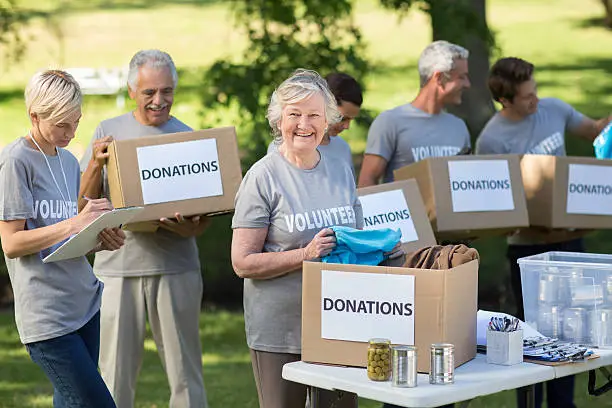
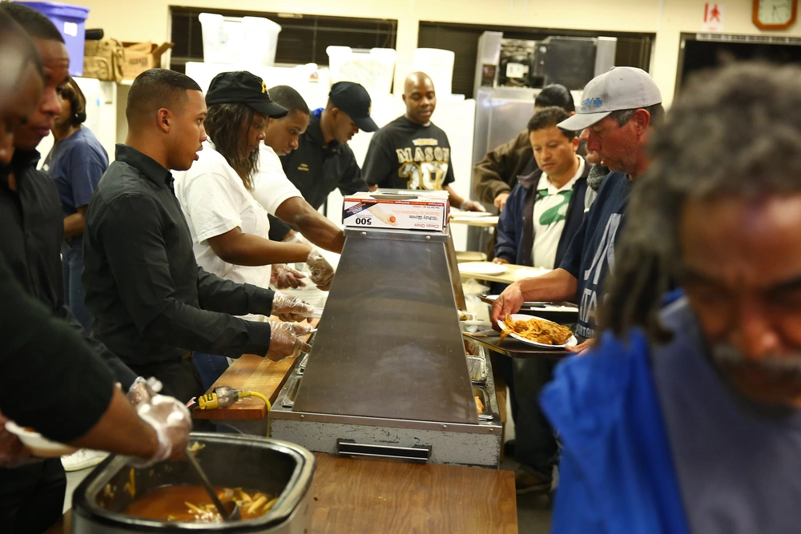

VOLUNTEER
BECOME A VOLUNTEER
When you volunteer with Hope Haven, you are supporting neighbors across Connecticut who need safe shelter, food, and guidance. Volunteers are a key part of our work, whether you join as an individual, a family, or a community group.
Below are some ways you can serve:
SHELTER SUPPORT
- Greet guests and help them find check-in and basic services.
- Serve meals or snacks during busy evening and weekend hours.
- Sort blankets, clothing, and hygiene kits for distribution.
FOOD & MEAL PROGRAMS
- Pack food boxes for families and outreach teams.
- Assist at community meals and food-pickup locations.
- Help load donations for partner shelters and food pantries.
COMMUNITY OUTREACH
- Share Hope Haven resource information with local partners.
- Support supply drives, awareness events, or seasonal projects.
- Help with administrative and small organizational tasks.
Questions? Email us at volunteer@hopehavenct.org.


SUPPORT HOPE HAVEN WITH A DONATION
If you're unable to volunteer in person, you can still make a meaningful impact. Donations help us keep shelters open, stock food supplies, and provide essential support for families across Connecticut.
DONATE